Bayesian inference and other things
with the TuringLang ecosystem
Before we begin
Make sure you're in the correct directory
pwd()
"/home/tor/Projects/public/Turing-Workshop/2023-Geilo-Winter-School/Part-2-Turing-and-other-things"
Then run something like (depending on which OS you are on)
julia --project
or if you're already in a REPL, do
]activate .
Activating project at `~/Projects/public/Turing-Workshop/2023-Geilo-Winter-School/Part-2-Turing-and-other-things`
to activate the project
And just to check that you're in the correct one
]status
Project GeiloWinterSchool2023Part2 v0.1.0 Status `~/Projects/public/Turing-Workshop/2023-Geilo-Winter-School/Part-2-Turing-and-other-things/Project.toml` [6e4b80f9] BenchmarkTools v1.3.2 [336ed68f] CSV v0.10.9 [a93c6f00] DataFrames v1.4.4 ⌃ [2b5f629d] DiffEqBase v6.114.1 [0c46a032] DifferentialEquations v7.6.0 [31c24e10] Distributions v0.25.80 [f6369f11] ForwardDiff v0.10.34 [6fdf6af0] LogDensityProblems v2.1.0 [996a588d] LogDensityProblemsAD v1.1.1 [429524aa] Optim v1.7.4 [c46f51b8] ProfileView v1.5.2 [37e2e3b7] ReverseDiff v1.14.4 `https://github.com/torfjelde/ReverseDiff.jl#torfjelde/sort-of-support-non-linear-indexing` [0bca4576] SciMLBase v1.81.0 ⌃ [1ed8b502] SciMLSensitivity v7.17.1 [f3b207a7] StatsPlots v0.15.4 [fce5fe82] Turing v0.24.0 [0db1332d] TuringBenchmarking v0.1.1 [e88e6eb3] Zygote v0.6.55 Info Packages marked with ⌃ have new versions available and may be upgradable.
Download and install dependencies
]instantiate
And finally, do
using GeiloWinterSchool2023Part2
to get some functionality I've implemented for the occasion
The story of a little Norwegian boy
There once was a little Norwegian boy

When this little boy was 20 years old, he was working as a parking guard near Preikestolen/Pulpit rock

One day it was raining and there was nobody hiking, and so there was no cars in sight for the little boy to point
When his boss wasn't looking, the little 20 year-old boy had an amazing idea
Maybe I can use this method of Mr. Bayes I learned a bit about yesteday to model football / Premier League?
The little boy got very excited and started looking for stuff on the big interwebs
The little boy came across this

And got very excited
But at the time, the little boy knew next to nothing about programming
The little boy couldn't write the code to do the inference
Whence the little boy became a sad little boy :(
But time heals all wounds, and at some point the little boy learned Python
And in Python, the boy found the probabilistic programming language pymc3
Maybe I can use
pymc3to perform inference in that football / Premier League model?
And so the sad boy once more became an excited little boy :)
But there was a problem
The boy wanted to write a for-loop in his model, but the model didn't want it to be so and complained!
The boy got frustrated and gave up, once more becoming a sad little boy :(
The boy should have known that the computational backend theano that was used by pymc3 at the time couldn't handle a for-loop, and instead he should have used scan. But the boy was only 20-something years old; he didn't know.
Some years later the boy discovers a programming language called Julia
Julia makes a few promises
- It's fast. Like really fast.
- It's interactive; doesn't require full compilation for you to play with it.
- You don't have to specify types everywhere.
The boy thinks
Wait, but this sounds like Python but the only difference is that…I CAN WRITE FOR-LOOPS WITHOUT FEELING BAD ABOUT IT?!
Yes, yes he could
And 3.5 years later, he's still writing for-loops. Well, sort of.
Why Turing.jl?
Duh, you should use Turing.jl so you get to use Julia
But even in Julia, other PPLS exist
But Turing.jl is very similar to Julia in "philosophy":
- Flexiblility
- Ease-of-use
- Speed (potentially with a bit of effort)
So it's a pretty good candidate
Running example
We'll work with an outbreak of influenza A (H1N1) in 1978 at a British boarding school
- 763 male students -> 512 of which became ill
- Reported that one infected boy started the epidemic
- Observations are number of boys in bed over 14 days
Data are freely available in the R package outbreaks, maintained as part of the R Epidemics Consortium
Data + part of the analysis is heavily inspired by https://mc-stan.org/users/documentation/case-studies/boarding_school_case_study.html
Stan definitively beats Turing.jl when it comes to great write-ups like these
Loading into Julia
# Load the dataframe.
using Dates
using DataFrames, CSV
N = 763
data = DataFrame(CSV.File(joinpath("data", "influenza_england_1978_school.csv")));
print(data)
14×4 DataFrame
Row │ Column1 date in_bed convalescent
│ Int64 Date Int64 Int64
─────┼───────────────────────────────────────────
1 │ 1 1978-01-22 3 0
2 │ 2 1978-01-23 8 0
3 │ 3 1978-01-24 26 0
4 │ 4 1978-01-25 76 0
5 │ 5 1978-01-26 225 9
6 │ 6 1978-01-27 298 17
7 │ 7 1978-01-28 258 105
8 │ 8 1978-01-29 233 162
9 │ 9 1978-01-30 189 176
10 │ 10 1978-01-31 128 166
11 │ 11 1978-02-01 68 150
12 │ 12 1978-02-02 29 85
13 │ 13 1978-02-03 14 47
14 │ 14 1978-02-04 4 20
Notice that each of the columns have associated types
Let's visualize the samples:
using StatsPlots
# StatsPlots.jl provides this convenient macro `@df` for plotting a `DataFrame`.
@df data scatter(:date, :in_bed, label=nothing, ylabel="Number of students in bed")
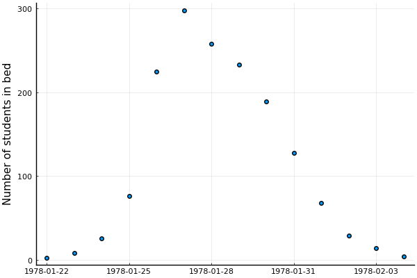
Differential equations
Suppose we have some function \(f\) which describes how a state \(x\) evolves wrt. \(t\)
which we then need to integrate to obtain the actual state at some time \(t\)
In many interesting scenarios numerical methods are required to obtain \(x(t)\)
In Julia
Everything related to differential equations is provided by DifferentialEquations.jl
And I really do mean everything


Example: SIR model
One particular example of an (ordinary) differential equation that you might have seen recently is the SIR model used in epidemiology
Figure 7: https://covid19.uclaml.org/model.html (2023-01-19)
The temporal dynamics of the sizes of each of the compartments are governed by the following system of ODEs:
where
- \(S(t)\) is the number of people susceptible to becoming infected,
- \(I(t)\) is the number of people currently infected,
- \(R(t)\) is the number of recovered people,
- \(β\) is the constant rate of infectious contact between people,
- \(\gamma\) the constant recovery rate of infected individuals
Converting this ODE into code is just
using DifferentialEquations
function SIR!(
du, # buffer for the updated differential equation
u, # current state
p, # parameters
t # current time
)
N = 763 # population
S, I, R = u
β, γ = p
du[1] = dS = -β * I * S / N
du[2] = dI = β * I * S / N - γ * I
du[3] = dR = γ * I
end
SIR! (generic function with 1 method)
Not too bad!
Initial conditions are then
and we want to integrate from \(t = 0\) to \(t = 14\)
# Include 0 because that's the initial condition before any observations.
tspan = (0.0, 14.0)
# Initial conditions are:
# S(0) = N - 1; I(0) = 1; R(0) = 0
u0 = [N - 1, 1, 0.0]
3-element Vector{Float64}:
762.0
1.0
0.0
Now we just need to define the overall problem and we can solve:
# Just to check that everything works, we'll just use some "totally random" values for β and γ:
problem_sir = let β = 2.0, γ = 0.6
ODEProblem(SIR!, u0, tspan, (β, γ))
end
ODEProblem with uType Vector{Float64} and tType Float64. In-place: true
timespan: (0.0, 14.0)
u0: 3-element Vector{Float64}:
762.0
1.0
0.0
Aaaand
sol = solve(problem_sir)
retcode: Success
Interpolation: specialized 4th order "free" interpolation, specialized 2nd order "free" stiffness-aware interpolation
t: 23-element Vector{Float64}:
0.0
0.0023558376404244326
0.025914214044668756
0.11176872871946908
0.26714420676761075
0.47653584778586056
0.7436981238065388
1.0701182881347182
1.4556696154809898
1.8994815718103506
2.4015425820305163
2.9657488203418048
3.6046024613854746
4.325611232479916
5.234036476235002
6.073132270491685
7.323851265223563
8.23100744184026
9.66046960467715
11.027717843180652
12.506967592177675
13.98890399536329
14.0
u: 23-element Vector{Vector{Float64}}:
[762.0, 1.0, 0.0]
[761.9952867607622, 1.003297407481751, 0.001415831756055325]
[761.9472927630898, 1.036873767352754, 0.015833469557440357]
[761.7584189579304, 1.1690001128296739, 0.0725809292398516]
[761.353498610305, 1.4522140137552049, 0.19428737593979384]
[760.6490369821046, 1.9447820690728455, 0.4061809488225752]
[759.3950815454128, 2.8210768113583082, 0.7838416432288186]
[757.0795798160242, 4.437564277195732, 1.4828559067800167]
[752.6094742865345, 7.552145919430467, 2.8383797940350495]
[743.573784947305, 13.823077731564027, 5.603137321131049]
[724.5575481927715, 26.909267078762316, 11.533184728466205]
[683.6474029897502, 54.51612001957392, 24.836476990675976]
[598.1841629858786, 109.41164143668018, 55.40419557744127]
[450.08652743810205, 192.396449154863, 120.51702340703504]
[259.11626253270623, 256.9925778114915, 246.89115965580237]
[148.3573731526537, 240.10301213899098, 374.53961470835543]
[76.52998017846475, 160.6373332952353, 525.8326865263001]
[55.70519994004921, 108.7634182279299, 598.531381832021]
[41.39587834423381, 55.09512088924873, 666.5090007665176]
[35.87067243374374, 27.821838135708532, 699.3074894305479]
[33.252184333490774, 13.087185981359177, 716.6606296851502]
[32.08996839417716, 6.105264616193066, 724.8047669896299]
[32.08428686823946, 6.070415830241046, 724.8452973015196]
We didn't specify a solver
DifferentialEquations.jl uses AutoTsit5(Rosenbrock32()) by default
Which is a composition between
Tsit5(4th order Runge-Kutta), andRosenbrock32(3rd order stiff solver)
with automatic switching between the two
AutoTsit5(Rosenbrock32()) covers many use-cases well, but see
- https://docs.sciml.ai/DiffEqDocs/stable/solvers/ode_solve/
- https://www.stochasticlifestyle.com/comparison-differential-equation-solver-suites-matlab-r-julia-python-c-fortran/
for more info on choosing a solver
This is the resulting solution
plot(
sol,
linewidth=2, xaxis="Time in days", label=["Suspectible" "Infected" "Recovered"],
alpha=0.5, size=(500, 300)
)
scatter!(1:14, data.in_bed, label="Data", color="black")
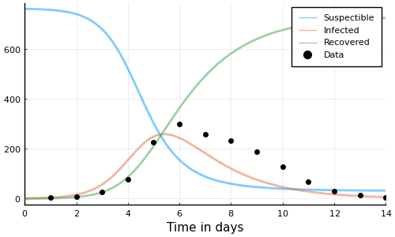
This doesn't really match the data though; let's do better
Approach #1: find optimal values of \(\beta\) and \(\gamma\) by minimizing some loss, e.g. sum-of-squares
where \(\big( y_i \big)_{i = 1}^{14}\) are the observations, \(F\) is the integrated system
First we define the loss
# Define the loss function.
function loss_sir(problem_orig, p)
# `remake` just, well, remakes the `problem` with `p` replaced.
problem = remake(problem_orig, p=p)
# To ensure we get solutions _exactly_ at the timesteps of interest,
# i.e. every day we have observations, we use `saveat=1` to tell `solve`
# to save at every timestep (which is one day).
sol = solve(problem, saveat=1)
# Extract the 2nd state, the (I)infected, for the dates with observations.
sol_for_observed = sol[2, 2:15]
# Compute the sum-of-squares of the infected vs. data.
sum(abs2.(sol_for_observed - data.in_bed))
end
loss_sir (generic function with 1 method)
And the go-to for optimization in Julia is Optim.jl
using Optim
# An alternative to writing `y -> f(x, y)` is `Base.Fix1(f, x)` which
# avoids potential performance issues with global variables (as our `problem` here).
opt = optimize(
p -> loss_sir(problem_sir, p), # function to minimize
[0, 0], # lower bounds on variables
[Inf, Inf], # upper bounds on variables
[2.0, 0.5], # initial values
Fminbox(NelderMead()) # optimization alg
)
* Status: success * Candidate solution Final objective value: 4.116433e+03 * Found with Algorithm: Fminbox with Nelder-Mead * Convergence measures |x - x'| = 0.00e+00 ≤ 0.0e+00 |x - x'|/|x'| = 0.00e+00 ≤ 0.0e+00 |f(x) - f(x')| = 0.00e+00 ≤ 0.0e+00 |f(x) - f(x')|/|f(x')| = 0.00e+00 ≤ 0.0e+00 |g(x)| = 7.86e+04 ≰ 1.0e-08 * Work counters Seconds run: 4 (vs limit Inf) Iterations: 4 f(x) calls: 565 ∇f(x) calls: 1
We can extract the minimizers of the loss
β, λ = Optim.minimizer(opt)
β, λ
| 1.6692320164955483 | 0.44348639177622445 |
# Solve for the obtained parameters.
problem = remake(problem_sir, p=(β, λ))
sol = solve(problem_sir)
# Plot the solution.
plot(sol, linewidth=2, xaxis="Time in days", label=["Suspectible" "Infected" "Recovered"], alpha=0.5)
# And the data.
scatter!(1:14, data.in_bed, label="Data", color="black")
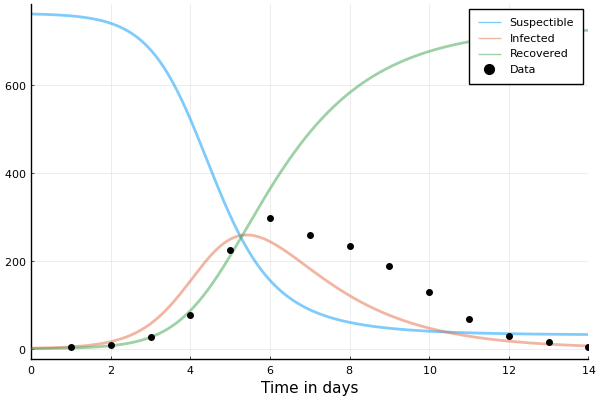
That's better than our totally "random" guess from earlier!
Example: SEIR model
Adding another compartment to our SIR model: the (E)xposed state
where we've added a new parameter \({\color{orange} \sigma}\) describing the fraction of people who develop observable symptoms in this time
TASK Solve the SEIR model using Julia
function SEIR!(
du, # buffer for the updated differential equation
u, # current state
p, # parameters
t # current time
)
N = 763 # population
S, E, I, R = u # have ourselves an additional state!
β, γ, σ = p # and an additional parameter!
# TODO: Implement yah fool!
du[1] = nothing
du[2] = nothing
du[3] = nothing
du[4] = nothing
end
BONUS: Use Optim.jl to find minimizers of sum-of-squares
SOLUTION Solve the SEIR model using Julia
function SEIR!(
du, # buffer for the updated differential equation
u, # current state
p, # parameters
t # current time
)
N = 763 # population
S, E, I, R = u # have ourselves an additional state!
β, γ, σ = p # and an additional parameter!
# Might as well cache these computations.
βSI = β * S * I / N
σE = σ * E
γI = γ * I
du[1] = -βSI
du[2] = βSI - σE
du[3] = σE - γI
du[4] = γI
end
SEIR! (generic function with 1 method)
problem_seir = let u0 = [N - 1, 0, 1, 0], β = 2.0, γ = 0.6, σ = 0.8
ODEProblem(SEIR!, u0, tspan, (β, γ, σ))
end
ODEProblem with uType Vector{Int64} and tType Float64. In-place: true
timespan: (0.0, 14.0)
u0: 4-element Vector{Int64}:
762
0
1
0
sol_seir = solve(problem_seir, saveat=1)
retcode: Success
Interpolation: 1st order linear
t: 15-element Vector{Float64}:
0.0
1.0
2.0
3.0
4.0
5.0
6.0
7.0
8.0
9.0
10.0
11.0
12.0
13.0
14.0
u: 15-element Vector{Vector{Float64}}:
[762.0, 0.0, 1.0, 0.0]
[760.1497035901518, 1.277915971753478, 1.0158871356490553, 0.5564933024456415]
[757.5476928906271, 2.425869618233348, 1.6850698824327135, 1.341367608706787]
[753.081189706403, 4.277014534677882, 2.9468385687120784, 2.6949571902067637]
[745.3234082630842, 7.455598293492679, 5.155811621098981, 5.065181822323938]
[731.9851682751213, 12.855816151849933, 8.960337047554939, 9.198678525473571]
[709.5042941973462, 21.77178343781762, 15.384985521594787, 16.338936843241182]
[672.8733895183619, 35.77263271085456, 25.88133104438007, 28.472646726403138]
[616.390571176038, 55.97177756967422, 42.09614416178476, 48.54150709250279]
[536.453596476594, 81.2428045994271, 64.9673325777641, 80.33626634621449]
[436.43708330634297, 106.04037246704702, 92.9550757379631, 127.56746848864664]
[329.60092931771436, 121.08020372279418, 120.48402926084937, 191.83483769864185]
[233.8471941518982, 119.43669383157659, 139.3233304893263, 270.3927815271987]
[160.88805352426687, 102.7399386960996, 143.3826208089892, 355.9893869706441]
[111.72261866282292, 79.02493776169311, 132.78384886713565, 439.46859470834806]
plot(sol_seir, linewidth=2, xaxis="Time in days", label=["Suspectible" "Exposed" "Infected" "Recovered"], alpha=0.5)
scatter!(1:14, data.in_bed, label="Data")

Don't look so good. Let's try Optim.jl again.
function loss_seir(problem, p)
problem = remake(problem, p=p)
sol = solve(problem, saveat=1)
# NOTE: 3rd state is now the (I)nfectious compartment!!!
sol_for_observed = sol[3, 2:15]
return sum(abs2.(sol_for_observed - data.in_bed))
end
loss_seir (generic function with 1 method)
opt = optimize(Base.Fix1(loss_seir, problem_seir), [0, 0, 0], [Inf, Inf, Inf], [2.0, 0.5, 0.9], Fminbox(NelderMead()))
* Status: success (reached maximum number of iterations) * Candidate solution Final objective value: 3.115978e+03 * Found with Algorithm: Fminbox with Nelder-Mead * Convergence measures |x - x'| = 0.00e+00 ≤ 0.0e+00 |x - x'|/|x'| = 0.00e+00 ≤ 0.0e+00 |f(x) - f(x')| = 0.00e+00 ≤ 0.0e+00 |f(x) - f(x')|/|f(x')| = 0.00e+00 ≤ 0.0e+00 |g(x)| = 1.77e+05 ≰ 1.0e-08 * Work counters Seconds run: 2 (vs limit Inf) Iterations: 3 f(x) calls: 13259 ∇f(x) calls: 1
β, γ, σ = Optim.minimizer(opt)
3-element Vector{Float64}:
4.853872993924619
0.4671485850111774
0.8150294098438762
sol_seir = solve(remake(problem_seir, p=(β, γ, σ)), saveat=1)
plot(sol_seir, linewidth=2, xaxis="Time in days", label=["Suspectible" "Exposed" "Infected" "Recovered"], alpha=0.5)
scatter!(1:14, data.in_bed, label="Data", color="black")
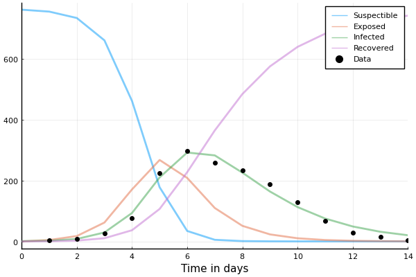
But…but these are point estimates! What about distributions? WHAT ABOUT UNCERTAINTY?!
No, no that's fair.
Let's do some Bayesian inference then.
BUT FIRST!
Making our future selves less annoyed
It's annoying to have all these different loss-functions for both SIR! and SEIR!
# Abstract type which we can use to dispatch on.
abstract type AbstractEpidemicProblem end
struct SIRProblem{P} <: AbstractEpidemicProblem
problem::P
N::Int
end
function SIRProblem(N::Int; u0 = [N - 1, 1, 0.], tspan = (0, 14), p = [2.0, 0.6])
return SIRProblem(ODEProblem(SIR!, u0, tspan, p), N)
end
SIRProblem
Then we can just construct the problem as
sir = SIRProblem(N);
And to make it a bit easier to work with, we add some utility functions
# General.
parameters(prob::AbstractEpidemicProblem) = prob.problem.p
initial_state(prob::AbstractEpidemicProblem) = prob.problem.u0
population(prob::AbstractEpidemicProblem) = prob.N
# Specializations.
susceptible(::SIRProblem, u::AbstractMatrix) = u[1, :]
infected(::SIRProblem, u::AbstractMatrix) = u[2, :]
recovered(::SIRProblem, u::AbstractMatrix) = u[3, :]
recovered (generic function with 1 method)
So that once we've solved the problem, we can easily extract the compartment we want, e.g.
sol = solve(sir.problem, saveat=1)
infected(sir, sol)
15-element Vector{Float64}:
1.0
4.026799533924021
15.824575905720002
56.779007685250534
154.4310579906169
248.98982384839158
243.67838619968524
181.93939659551987
120.64627375763271
75.92085282572398
46.58644927641269
28.214678599716418
16.96318676577873
10.158687874394722
6.070415830241046
TASK Implement SEIRProblem
struct SEIRProblem <: AbstractEpidemicProblem
# ...
end
function SEIRProblem end
susceptible
exposed
infected
recovered
SOLUTION Implement SEIRProblem
struct SEIRProblem{P} <: AbstractEpidemicProblem
problem::P
N::Int
end
function SEIRProblem(N::Int; u0 = [N - 1, 0, 1, 0.], tspan = (0, 14), p = [4.5, 0.45, 0.8])
return SEIRProblem(ODEProblem(SEIR!, u0, tspan, p), N)
end
susceptible(::SEIRProblem, u::AbstractMatrix) = u[1, :]
exposed(::SEIRProblem, u::AbstractMatrix) = u[2, :]
infected(::SEIRProblem, u::AbstractMatrix) = u[3, :]
recovered(::SEIRProblem, u::AbstractMatrix) = u[4, :]
recovered (generic function with 2 methods)
Now, given a problem and a sol, we can query the sol for the infected state without explicit handling of which problem we're working with
seir = SEIRProblem(N);
sol = solve(seir.problem, saveat=1)
infected(seir, sol)
15-element Vector{Float64}:
1.0
1.9941817088874336
6.958582307202902
23.9262335176065
74.23638542794971
176.98368495653585
276.06126059898344
293.92632518571605
249.92836195453708
189.07578975511504
134.2373192679034
91.82578430804273
61.38108478932363
40.42264366743211
26.357816296754425
Same loss for both!
function loss(problem_wrapper::AbstractEpidemicProblem, p)
# NOTE: Extract the `problem` from `problem_wrapper`.
problem = remake(problem_wrapper.problem, p=p)
sol = solve(problem, saveat=1)
# NOTE: Now this is completely general!
sol_for_observed = infected(problem_wrapper, sol)[2:end]
return sum(abs2.(sol_for_observed - data.in_bed))
end
loss (generic function with 1 method)
Now we can call the same loss for both SIR and SEIR
loss(SIRProblem(N), [2.0, 0.6])
50257.83978134881
loss(SEIRProblem(N), [2.0, 0.6, 0.8])
287325.105532706
Bayesian inference
First off
using Turing
This dataset really doesn't have too many observations
nrow(data)
14
So reporting a single number for parameters is maybe being a bit too confident
We'll use the following model
where
- \(\big( y_i \big)_{i = 1}^{14}\) are the observations,
- \(F\) is the integrated system, and
- \(\phi\) is the over-dispersion parameter.
plot(
plot(truncated(Normal(2, 1); lower=0), label=nothing, title="β"),
plot(truncated(Normal(0.4, 0.5); lower=0), label=nothing, title="γ"),
plot(Exponential(1/5), label=nothing, title="ϕ⁻¹"),
layout=(3, 1)
)

A NegativeBinomial(r, p) represents the number of trials to achieve \(r\) successes, where each trial has a probability \(p\) of success
A NegativeBinomial2(μ, ϕ) is the same, but parameterized using the mean \(μ\) and dispersion \(\phi\)
# `NegativeBinomial` already exists, so let's just make an alternative constructor instead.
function NegativeBinomial2(μ, ϕ)
p = 1/(1 + μ/ϕ)
r = ϕ
return NegativeBinomial(r, p)
end
NegativeBinomial2 (generic function with 1 method)
# Let's just make sure we didn't do something stupid.
μ = 2; ϕ = 3;
dist = NegativeBinomial2(μ, ϕ)
# Source: https://mc-stan.org/docs/2_20/functions-reference/nbalt.html
mean(dist) ≈ μ && var(dist) ≈ μ + μ^2 / ϕ
true
Can be considered a generalization of Poisson
μ = 2.0
anim = @animate for ϕ ∈ [0.1, 0.5, 1.0, 2.0, 5.0, 10.0, 25.0, 100.0]
p = plot(size=(500, 300))
plot!(p, Poisson(μ); label="Poisson($μ)")
plot!(p, NegativeBinomial2(μ, ϕ), label="NegativeBinomial2($μ, $ϕ)")
xlims!(0, 20); ylims!(0, 0.35);
p
end
gif(anim, "negative_binomial.gif", fps=2);
[ Info: Saved animation to /home/tor/Projects/public/Turing-Workshop/2023-Geilo-Winter-School/Part-2-Turing-and-other-things/negative_binomial.gif
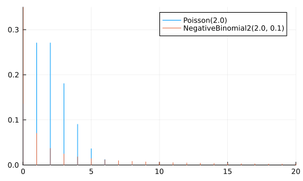
@model function sir_model(
num_days; # Number of days to model
tspan = (0.0, float(num_days)), # Timespan to model
u0 = [N - 1, 1, 0.0], # Initial state
p0 = [2.0, 0.6], # Placeholder parameters
problem = ODEProblem(SIR!, u0, tspan, p0) # Create problem once so we can `remake`.
)
β ~ truncated(Normal(2, 1); lower=0)
γ ~ truncated(Normal(0.4, 0.5); lower=0)
ϕ⁻¹ ~ Exponential(1/5)
ϕ = inv(ϕ⁻¹)
problem_new = remake(problem, p=[β, γ]) # Replace parameters `p`.
sol = solve(problem_new, saveat=1) # Solve!
sol_for_observed = sol[2, 2:num_days + 1] # Timesteps we have observations for.
in_bed = Vector{Int}(undef, num_days)
for i = 1:length(sol_for_observed)
# Add a small constant to `sol_for_observed` to make things more stable.
in_bed[i] ~ NegativeBinomial2(sol_for_observed[i] + 1e-5, ϕ)
end
# Some quantities we might be interested in.
return (R0 = β / γ, recovery_time = 1 / γ, infected = sol_for_observed)
end
sir_model (generic function with 2 methods)
Let's break it down
β ~ truncated(Normal(2, 1); lower=0)
γ ~ truncated(Normal(0.4, 0.5); lower=0)
ϕ⁻¹ ~ Exponential(1/5)
ϕ = inv(ϕ⁻¹)
defines our prior
truncated is just a way of restricting the domain of the distribution you pass it
problem_new = remake(problem, p=[β, γ]) # Replace parameters `p`.
sol = solve(problem_new, saveat=1) # Solve!
We then remake the problem, now with the parameters [β, γ] sampled above
saveat = 1 gets us the solution at the timesteps [0, 1, 2, ..., 14]
Then we extract the timesteps we have observations for
sol_for_observed = sol[2, 2:num_days + 1] # Timesteps we have observations for.
and define what's going to be a likelihood (once we add observations)
in_bed = Vector{Int}(undef, num_days)
for i = 1:length(sol_for_observed)
# Add a small constant to `sol_for_observed` to make things more stable.
in_bed[i] ~ NegativeBinomial2(sol_for_observed[i] + 1e-5, ϕ)
end
Finally we return some values that might be of interest to
# Some quantities we might be interested in.
return (R0 = β / γ, recovery_time = 1 / γ, infected = sol_for_observed)
This is useful for a post-sampling diagnostics, debugging, etc.
model = sir_model(length(data.in_bed))
Model( args = (:num_days, :tspan, :u0, :p0, :problem) defaults = (:tspan, :u0, :p0, :problem) context = DynamicPPL.DefaultContext() )
The model is just another function, so we can call it to check that it works
model().infected
14-element Vector{Float64}:
2.2295700022651075
4.927331246009365
10.681614028307619
22.23058978615119
42.6812751635693
71.14024498628329
96.72657437846203
104.71913606980853
92.91278401322928
71.43724358600967
50.067939463352374
33.14165838166343
21.191847328183893
13.274639644275839
Hey, it does!
Is the prior reasonable?
Before we do any inference, we should check if the prior is reasonable
From domain knowledge we know that (for influenza at least)
- \(R_0\) is typically between 1 and 2
recovery_time(\(1 / \gamma\)) is usually ~1 week
We want to make sure that your prior belief reflects this knowledge while still being flexible enough to accommodate the observations
To check this we'll just simulate some draws from our prior model, i.e. the model without conditioning on in_bed
There are two ways to sample form the prior
# 1. By just calling the `model`, which returns a `NamedTuple` containing the quantities of interest
print(model())
(R0 = 1.3358543777232008, recovery_time = 1.4597215785763031, infected = [1.2564491834146208, 1.5764857019559797, 1.974621660891538, 2.467963219465631, 3.0762660015464633, 3.8216818807464277, 4.7281309374402385, 5.819785695206419, 7.119184532094743, 8.642962978933385, 10.398007719770634, 12.375418090031244, 14.542944907144907, 16.84182237897471])
Or by just calling sample using Prior
# Sample from prior.
chain_prior = sample(model, Prior(), 10_000);
Sampling: 15%|██████▏ | ETA: 0:00:01 Sampling: 100%|█████████████████████████████████████████| Time: 0:00:01
Let's have a look at the prior predictive
p = plot(legend=false, size=(600, 300))
plot_trajectories!(p, group(chain_prior, :in_bed); n = 1000)
hline!([N], color="red")
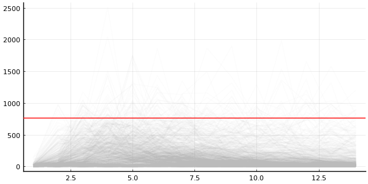
For certain values we get number of infected larger than the actual population
But this is includes the randomness from NegativeBinomial2 likelihood
Maybe more useful to inspect the (I)nfected state from the ODE solution?
We can also look at the generated_quantities, i.e. the values from the return statement in our model
Our return looked like this
# Some quantities we might be interested in.
return (R0 = β / γ, recovery_time = 1 / γ, infected = sol_for_observed)
and so generated_quantities (conditioned on chain_prior) gives us
quantities_prior = generated_quantities(
model,
MCMCChains.get_sections(chain_prior, :parameters)
)
print(quantities_prior[1])
(R0 = 1.4311533066852662, recovery_time = 1.3673739511522665, infected = [1.3677203987347446, 1.86697113677146, 2.5416209893740924, 3.447470462056839, 4.65321171724715, 6.239252320686195, 8.292880721544766, 10.895543937392112, 14.103134511728143, 17.910580285980863, 22.215842580391524, 26.783070375390594, 31.23850085342543, 35.1093437531573])
We can convert it into a Chains using a utility function of mine
# Convert to `Chains`.
chain_quantities_prior = to_chains(quantities_prior);
# Plot.
p = plot(legend=false, size=(600, 300))
plot_trajectories!(p, group(chain_quantities_prior, :infected); n = 1000)
hline!([N], color="red")
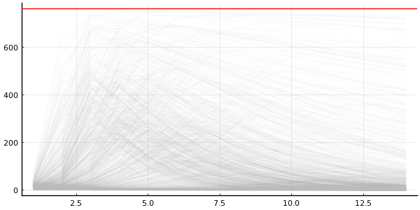
NOTE: to_chains is not part of "official" Turing.jl because the return can contain whatever you want, and so it's not always possible to convert into a Chains
And the quantiles for the trajectories
p = plot(legend=false, size=(600, 300))
plot_trajectory_quantiles!(p, group(chain_quantities_prior, :infected))
hline!(p, [N], color="red")
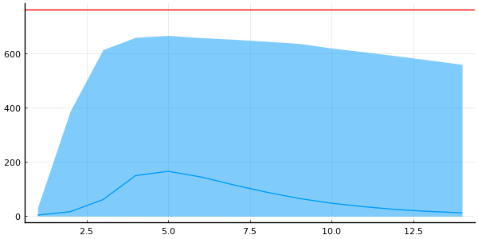
DataFrame(quantile(chain_quantities_prior[:, [:R0, :recovery_time], :]))
2×6 DataFrame
Row │ parameters 2.5% 25.0% 50.0% 75.0% 97.5%
│ Symbol Float64 Float64 Float64 Float64 Float64
─────┼─────────────────────────────────────────────────────────────
1 │ R0 0.489627 2.04538 3.66574 7.36962 65.4435
2 │ recovery_time 0.688356 1.19663 1.87409 3.51041 32.2913
Compare to our prior knowledge of \(R_0 \in [1, 2]\) and \((1/\gamma) \approx 1\) for influenza
Do we really need probability mass on \(R_0 \ge 10\)?
TASK What's wrong with the current prior?
The SIR model
And here's the current priors
plot(
plot(truncated(Normal(2, 1); lower=0), label=nothing, title="β"),
plot(truncated(Normal(0.4, 0.5); lower=0), label=nothing, title="γ"),
plot(Exponential(1/5), label=nothing, title="ϕ⁻¹"),
layout=(3, 1)
)
SOLUTION Recovery time shouldn't be several years
We mentioned that recovery_time, which is expressed as \(1 / \gamma\), is ~1 week
We're clearly putting high probability on regions near 0, i.e. long recovery times
plot(truncated(Normal(0.4, 0.5); lower=0), label=nothing, title="γ", size=(500, 300))
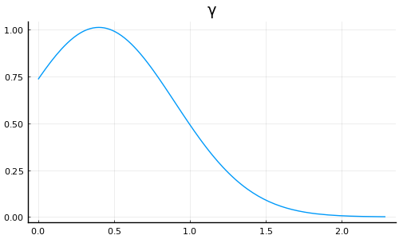
Should probably be putting less probability mass near 0
SOLUTION \({\color{red} \gamma}\) should not be larger than 1
If \({\color{red} \gamma} > 1\) ⟹ (R)ecovered increase by more than the (I)nfected
⟹ healthy people are recovering
Now, I'm no epidemiologist, but that doesn't seem right
Maybe something like
plot(Beta(2, 5), label="new", size=(500, 300))
plot!(truncated(Normal(0.4, 0.5); lower=0), label="old", color="red")
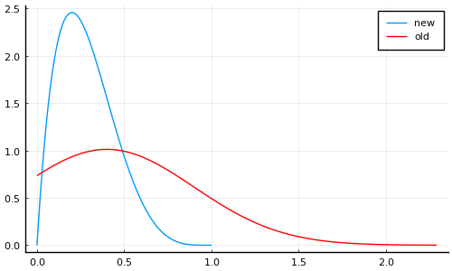
[X]Bounded at 1[X]Allows smaller values (i.e. longer recovery time) but rapidly decreases near zero
SOLUTION What if \({\color{red} \beta} > N\)?
Then for \(t = 0\) we have
i.e. we immediately infect everyone on the very first time-step
Also doesn't seem very realistic
But under our current prior does this matter?
# ℙ(β > N) = 1 - ℙ(β ≤ N)
1 - cdf(truncated(Normal(2, 1); lower=0), N)
0.0
Better yet
quantile(truncated(Normal(2, 1); lower=0), 0.95)
3.6559843567138275
i.e. 95% of the probability mass falls below ~3.65
⟹ Current prior for \(\beta\) seems fine (✓)
Before we change the prior, let's also make it a bit easier to change the prior using @submodel
@submodel allows you call models within models, e.g.
@model function A()
x_hidden_from_B ~ Normal()
x = x_hidden_from_B + 100
return x
end
@model function B()
@submodel x = A()
y ~ Normal(x, 1)
return (; x, y)
end
B (generic function with 2 methods)
# So if we call `B` we only see `x` and `y`
println(B()())
(x = 102.51258397436986, y = 103.22256885472609)
# While if we sample from `B` we get the latent variables
println(rand(B()))
(x_hidden_from_B = -0.09837821455315705, y = 99.95463346263506)
To avoid clashes of variable-names, we can specify a prefix
@model A() = (x ~ Normal(); return x + 100)
@model function B()
# Given it a prefix to use for the variables in `A`.
@submodel prefix=:inner x_inner = A()
x ~ Normal(x_inner, 1)
return (; x_inner, x)
end
B (generic function with 2 methods)
print(rand(B()))
(var"inner.x" = -1.940913982622125, x = 96.14603810272104)
@submodel is useful as it allows you to:
- Easy to swap out certain parts of your model.
- Can re-use models across projects and packages.
When working on larger projects, this really shines
Equipped with @submodel we can replace
β ~ truncated(Normal(2, 1); lower=0)
γ ~ truncated(Normal(0.4, 0.5); lower=0)
with
@submodel p = prior(problem_wrapper)
where prior can be something like
@model function prior_original(problem_wrapper::SIRProblem)
β ~ truncated(Normal(2, 1); lower=0)
γ ~ truncated(Normal(0.4, 0.5); lower=0)
return [β, γ]
end
@model function prior_improved(problem_wrapper::SIRProblem)
# NOTE: Should probably also lower mean for `β` since
# more probability mass on small `γ` ⟹ `R0 = β / γ` grows.
β ~ truncated(Normal(1, 1); lower=0)
# NOTE: New prior for `γ`.
γ ~ Beta(2, 5)
return [β, γ]
end
prior_improved (generic function with 2 methods)
@model function epidemic_model(
problem_wrapper::AbstractEpidemicProblem,
prior # NOTE: now we just pass the prior as an argument
)
# NOTE: And use `@submodel` to embed the `prior` in our model.
@submodel p = prior(problem_wrapper)
ϕ⁻¹ ~ Exponential(1/5)
ϕ = inv(ϕ⁻¹)
problem_new = remake(problem_wrapper.problem, p=p) # Replace parameters `p`.
sol = solve(problem_new, saveat=1) # Solve!
# Extract the `infected`.
sol_for_observed = infected(problem_wrapper, sol)[2:end]
# NOTE: `arraydist` is faster for larger dimensional problems,
# and it does not require explicit allocation of the vector.
in_bed ~ arraydist(NegativeBinomial2.(sol_for_observed .+ 1e-5, ϕ))
β, γ = p[1:2]
return (R0 = β / γ, recovery_time = 1 / γ, infected = sol_for_observed)
end
epidemic_model (generic function with 2 methods)
Another neat trick is to return early if integration fail
@model function epidemic_model(
problem_wrapper::AbstractEpidemicProblem,
prior # now we just pass the prior as an argument
)
# And use `@submodel` to embed the `prior` in our model.
@submodel p = prior(problem_wrapper)
ϕ⁻¹ ~ Exponential(1/5)
ϕ = inv(ϕ⁻¹)
problem_new = remake(problem_wrapper.problem, p=p) # Replace parameters `p`.
sol = solve(problem_new, saveat=1) # Solve!
# NOTE: Return early if integration failed.
if !issuccess(sol)
Turing.@addlogprob! -Inf # NOTE: Causes automatic rejection.
return nothing
end
# Extract the `infected`.
sol_for_observed = infected(problem_wrapper, sol)[2:end]
# `arraydist` is faster for larger dimensional problems,
# and it does not require explicit allocation of the vector.
in_bed ~ arraydist(NegativeBinomial2.(sol_for_observed .+ 1e-5, ϕ))
β, γ = p[1:2]
return (R0 = β / γ, recovery_time = 1 / γ, infected = sol_for_observed)
end
epidemic_model (generic function with 2 methods)
Equipped with this we can now easily construct two models using different priors
sir = SIRProblem(N);
model_original = epidemic_model(sir, prior_original);
model_improved = epidemic_model(sir, prior_improved);
but using the same underlying epidemic_model
chain_prior_original = sample(model_original, Prior(), 10_000; progress=false);
chain_prior_improved = sample(model_improved, Prior(), 10_000; progress=false);
Let's compare the resulting priors over some of the quantities of interest
Let's compare the generated_quantities, e.g. \(R_0\)
chain_quantities_original = to_chains(
generated_quantities(
model_original,
MCMCChains.get_sections(chain_prior_original, :parameters)
);
);
chain_quantities_improved = to_chains(
generated_quantities(
model_improved,
MCMCChains.get_sections(chain_prior_improved, :parameters)
);
);
p = plot(; legend=false, size=(500, 200))
plot_trajectories!(p, group(chain_quantities_original, :infected); n = 100, trajectory_color="red")
plot_trajectories!(p, group(chain_quantities_improved, :infected); n = 100, trajectory_color="blue")
hline!([N], color="red", linestyle=:dash)
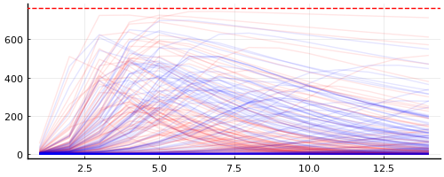
plt1 = plot(legend=false)
plot_trajectory_quantiles!(plt1, group(chain_quantities_original, :infected))
hline!(plt1, [N], color="red", linestyle=:dash)
plt2 = plot(legend=false)
plot_trajectory_quantiles!(plt2, group(chain_quantities_improved, :infected))
hline!(plt2, [N], color="red", linestyle=:dash)
plot(plt1, plt2, layout=(2, 1))
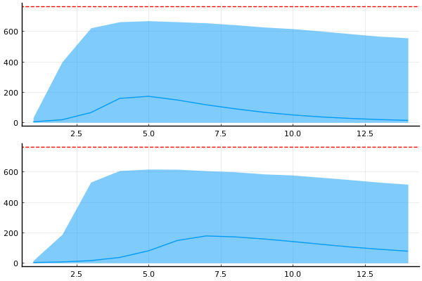
This makes sense: if half of the population is immediately infected ⟹ number of infected tapers wrt. time as they recover
For model_improved we then have
DataFrame(quantile(chain_quantities_improved[:, [:R0, :recovery_time], :]))
2×6 DataFrame
Row │ parameters 2.5% 25.0% 50.0% 75.0% 97.5%
│ Symbol Float64 Float64 Float64 Float64 Float64
─────┼─────────────────────────────────────────────────────────────
1 │ R0 0.300805 2.23609 4.42438 8.4091 33.6448
2 │ recovery_time 1.5527 2.57248 3.7699 6.21828 23.5913
Compare to model_original
DataFrame(quantile(chain_quantities_original[:, [:R0, :recovery_time], :]))
2×6 DataFrame
Row │ parameters 2.5% 25.0% 50.0% 75.0% 97.5%
│ Symbol Float64 Float64 Float64 Float64 Float64
─────┼─────────────────────────────────────────────────────────────
1 │ R0 0.49461 2.0686 3.70009 7.43427 71.811
2 │ recovery_time 0.700581 1.21619 1.89846 3.54111 32.9851
TASK Make epidemic_model work for SEIRProblem
[ ]Implement a prior which also includes \(\sigma\) and executeepidemic_modelwith it[ ]Can we make a better prior for \(\sigma\)? Do we even need one?
@model function prior_original(problem_wrapper::SEIRProblem)
# TODO: Implement
end
SOLUTION
@model function prior_original(problem_wrapper::SEIRProblem)
β ~ truncated(Normal(2, 1); lower=0)
γ ~ truncated(Normal(0.4, 0.5); lower=0)
σ ~ truncated(Normal(0.8, 0.5); lower=0)
return [β, γ, σ]
end
prior_original (generic function with 4 methods)
model_seir = epidemic_model(SEIRProblem(N), prior_original)
print(model_seir())
(R0 = 5.286959804014337, recovery_time = 2.741905960379667, infected = [1.3372179029758446, 2.7185437249296065, 5.680384456420876, 11.795273774830319, 24.095664644445492, 47.639498910678455, 88.57424572942526, 148.39025995009993, 213.9185438157589, 258.7787705303884, 265.781088091818, 240.18657163961103, 198.6495005881232, 155.05168904955065])
WARNING Consult with domain experts
This guy should not be the one setting your priors!
Get an actual scientist to do that…
Condition
Now let's actually involve the data
We can condition a Model as so
# Condition on the observations.
model = epidemic_model(SIRProblem(N), prior_improved)
model_conditioned = model | (in_bed = data.in_bed,)
Model( args = (:problem_wrapper, :prior) defaults = () context = ConditionContext((in_bed = [3, 8, 26, 76, 225, 298, 258, 233, 189, 128, 68, 29, 14, 4],), DynamicPPL.DefaultContext()) )
You know what time it is: inference time!
Metropolis-Hastings (MH)
chain_mh = sample(model_conditioned, MH(), MCMCThreads(), 10_000, 4; discard_initial=5_000);
Rhat is okay-ish but not great, and ESS is pretty low innit?
plot(chain_mh; size=(800, 500))
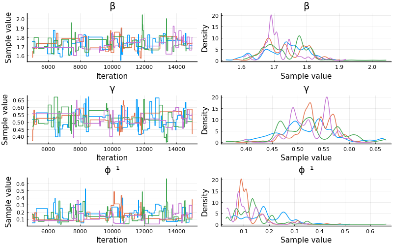
Eeehh doesn't look the greatest
Difficult to trust these results, but let's check if it at least did something useful
# We're using the unconditioned model!
predictions_mh = predict(model, chain_mh)
Chains MCMC chain (10000×14×4 Array{Float64, 3}):
Iterations = 1:1:10000
Number of chains = 4
Samples per chain = 10000
parameters = in_bed[1], in_bed[2], in_bed[3], in_bed[4], in_bed[5], in_bed[6], in_bed[7], in_bed[8], in_bed[9], in_bed[10], in_bed[11], in_bed[12], in_bed[13], in_bed[14]
internals =
Summary Statistics
parameters mean std naive_se mcse ess rhat ⋯
Symbol Float64 Float64 Float64 Float64 Float64 Float64 ⋯
in_bed[1] 3.3149 2.2263 0.0111 0.0175 31424.8578 1.0008 ⋯
in_bed[2] 10.9331 5.5779 0.0279 0.0896 2427.0804 1.0037 ⋯
in_bed[3] 34.4532 16.4608 0.0823 0.4203 898.6227 1.0103 ⋯
in_bed[4] 94.1922 44.2951 0.2215 1.2206 743.4733 1.0127 ⋯
in_bed[5] 189.3084 82.5486 0.4127 2.0496 929.4241 1.0113 ⋯
in_bed[6] 250.7510 100.2271 0.5011 1.6772 2344.4766 1.0038 ⋯
in_bed[7] 237.6469 92.3148 0.4616 1.2230 4712.4194 1.0014 ⋯
in_bed[8] 187.4117 73.7653 0.3688 1.1583 3116.2348 1.0006 ⋯
in_bed[9] 133.2187 54.1295 0.2706 1.0654 1683.2653 1.0016 ⋯
in_bed[10] 90.6592 38.1510 0.1908 0.8492 1284.1083 1.0018 ⋯
in_bed[11] 60.4441 26.7833 0.1339 0.6529 1048.7950 1.0021 ⋯
in_bed[12] 39.5564 18.4081 0.0920 0.4914 848.8126 1.0025 ⋯
in_bed[13] 25.6413 12.7239 0.0636 0.3568 782.5932 1.0022 ⋯
in_bed[14] 16.6958 8.7982 0.0440 0.2557 709.6598 1.0026 ⋯
Quantiles
parameters 2.5% 25.0% 50.0% 75.0% 97.5%
Symbol Float64 Float64 Float64 Float64 Float64
in_bed[1] 0.0000 2.0000 3.0000 5.0000 8.0000
in_bed[2] 3.0000 7.0000 10.0000 14.0000 24.0000
in_bed[3] 11.0000 24.0000 32.0000 42.0000 74.0000
in_bed[4] 31.0000 65.0000 87.0000 115.0000 202.0000
in_bed[5] 67.0000 134.0000 177.0000 229.0000 386.0000
in_bed[6] 94.0000 183.0000 238.0000 302.0000 489.0000
in_bed[7] 88.0000 175.0000 227.0000 286.0000 453.0000
in_bed[8] 69.9750 137.0000 179.0000 226.0000 359.0000
in_bed[9] 48.0000 96.0000 126.0000 162.0000 261.0000
in_bed[10] 31.0000 65.0000 86.0000 110.0000 181.0250
in_bed[11] 20.0000 42.0000 57.0000 74.0000 124.0000
in_bed[12] 12.0000 27.0000 37.0000 49.0000 84.0000
in_bed[13] 7.0000 17.0000 24.0000 32.0000 56.0000
in_bed[14] 4.0000 11.0000 15.0000 21.0000 38.0000
plot_trajectories!(plot(legend=false, size=(600, 300)), predictions_mh; data=data)
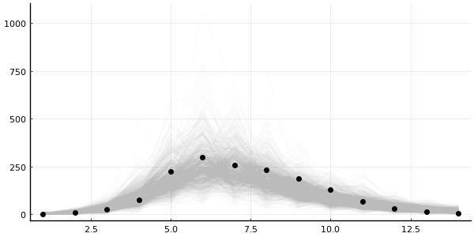
plot_trajectory_quantiles!(plot(legend=false, size=(600, 300)), predictions_mh; data=data)
Okay, it's not completely useless, but my trust-issues are still present.
Metropolis-Hastings have disappointed me one too many times before.
So instead, let's go NUTS
That's right, we're reaching to the No U-Turn sampler (NUTS)
Wooaah there!
NUTSrequires gradient information!How are you going to get that through that
solve?
Good question, voice in my head
I'm obviously not going to it myself
Automatic differentiation (AD) in Julia
- ForwardDiff.jl: forward-mode AD (default in Turing.jl)
- ReverseDiff.jl: tape-based reverse-mode AD
- Zygote.jl: source-to-source reverse-mode AD
- And more…
Up-and-coming
- Enzyme.jl: Julia bindings for Enzyme which ADs LLVM (low-level)
- Diffractor.jl: experimental mixed-mode AD meant to replace Zygote.jl
Of importance
- ChainRulesCore.jl: light-weight package for defining rules, compatible with many of the above
Important
When you write code, you don't have to make a choice which one you want to use!
All the (stable) ones, will (mostly) work
But how you write code will affect performance characteristics
Takes a bit of know-how + a bit of digging to go properly "vroom!"
Differentiating through solve
With that being said, differentiating through numerical solve is not necessarily trivial to do efficiently
There are numerous ways of approaching this problem

https://arxiv.org/abs/1812.01892 is great resource
But this is why we have SciMLSensitivity.jl
SciMLSensitivity.jl docs also provides a great overview of different approaches
using SciMLSensitivity
It offers
- Discrete sensitivity analysis or the "Direct" method: just use
ForwardDiff.Dualin thesolve. - Continuous local sensitivity analysis (CSA): extends the original
system such that the
solvegives you both the solution and the the gradient simultaenously. - Adjoint methods: construct a backwards system whose solution gives us the gradient.
Just do solve(problem, solver, sensealg = ...)
Back to being NUTS
chain = sample(model_conditioned, NUTS(0.8), MCMCThreads(), 1000, 4);
┌ Info: Found initial step size └ ϵ = 0.05 ┌ Info: Found initial step size └ ϵ = 0.05 ┌ Info: Found initial step size └ ϵ = 0.0125 ┌ Info: Found initial step size └ ϵ = 0.4
chain
Chains MCMC chain (1000×15×4 Array{Float64, 3}):
Iterations = 501:1:1500
Number of chains = 4
Samples per chain = 1000
Wall duration = 29.44 seconds
Compute duration = 116.72 seconds
parameters = β, γ, ϕ⁻¹
internals = lp, n_steps, is_accept, acceptance_rate, log_density, hamiltonian_energy, hamiltonian_energy_error, max_hamiltonian_energy_error, tree_depth, numerical_error, step_size, nom_step_size
Summary Statistics
parameters mean std naive_se mcse ess rhat ⋯
Symbol Float64 Float64 Float64 Float64 Float64 Float64 ⋯
β 1.7308 0.0547 0.0009 0.0011 2320.5520 1.0020 ⋯
γ 0.5294 0.0445 0.0007 0.0009 2326.9018 0.9998 ⋯
ϕ⁻¹ 0.1362 0.0774 0.0012 0.0017 2130.3831 1.0005 ⋯
1 column omitted
Quantiles
parameters 2.5% 25.0% 50.0% 75.0% 97.5%
Symbol Float64 Float64 Float64 Float64 Float64
β 1.6233 1.6967 1.7291 1.7628 1.8453
γ 0.4395 0.5011 0.5292 0.5575 0.6170
ϕ⁻¹ 0.0400 0.0829 0.1181 0.1697 0.3299
Muuuch better! Both ESS and Rhat is looking good
plot(chain; size=(800, 500))
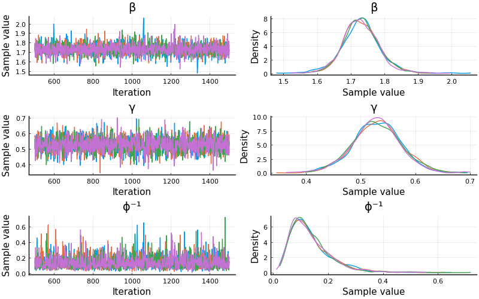
# Predict using the results from NUTS.
predictions = predict(model, chain)
Chains MCMC chain (1000×14×4 Array{Float64, 3}):
Iterations = 1:1:1000
Number of chains = 4
Samples per chain = 1000
parameters = in_bed[1], in_bed[2], in_bed[3], in_bed[4], in_bed[5], in_bed[6], in_bed[7], in_bed[8], in_bed[9], in_bed[10], in_bed[11], in_bed[12], in_bed[13], in_bed[14]
internals =
Summary Statistics
parameters mean std naive_se mcse ess rhat
Symbol Float64 Float64 Float64 Float64 Float64 Float64
in_bed[1] 3.3305 2.2139 0.0350 0.0293 4041.1481 0.9994
in_bed[2] 10.9315 5.4410 0.0860 0.0999 3854.9979 1.0010
in_bed[3] 34.2135 15.6859 0.2480 0.2592 3431.0984 1.0008
in_bed[4] 92.5170 40.7123 0.6437 0.6580 3218.9203 0.9994
in_bed[5] 185.8388 78.8672 1.2470 1.4373 3495.6796 1.0002
in_bed[6] 249.7985 99.1862 1.5683 1.6618 3861.4377 0.9999
in_bed[7] 237.5892 92.4141 1.4612 1.6446 3997.2748 1.0006
in_bed[8] 183.5085 70.0269 1.1072 1.1594 3487.6866 1.0004
in_bed[9] 132.7523 53.8731 0.8518 0.8035 3708.2547 1.0003
in_bed[10] 89.3858 36.2803 0.5736 0.5636 3672.7443 0.9998
in_bed[11] 59.0180 25.4689 0.4027 0.3887 3798.9375 1.0000
in_bed[12] 38.8227 17.6018 0.2783 0.3450 3054.6464 1.0007
in_bed[13] 24.5155 11.6205 0.1837 0.1906 3502.6672 1.0001
in_bed[14] 16.1663 8.2281 0.1301 0.1307 3384.9243 1.0000
Quantiles
parameters 2.5% 25.0% 50.0% 75.0% 97.5%
Symbol Float64 Float64 Float64 Float64 Float64
in_bed[1] 0.0000 2.0000 3.0000 5.0000 8.0000
in_bed[2] 3.0000 7.0000 10.0000 14.0000 24.0000
in_bed[3] 11.0000 24.0000 32.0000 42.0000 73.0250
in_bed[4] 31.0000 65.0000 86.0000 113.0000 192.0000
in_bed[5] 65.9750 134.0000 175.0000 225.0000 369.0250
in_bed[6] 96.9750 183.0000 237.0000 299.0000 486.0250
in_bed[7] 90.0000 177.7500 227.0000 284.0000 451.0000
in_bed[8] 69.9750 136.0000 176.0000 221.0000 348.0000
in_bed[9] 48.0000 96.0000 126.0000 160.0000 256.0250
in_bed[10] 34.0000 65.7500 85.0000 107.0000 171.0000
in_bed[11] 20.0000 42.0000 56.0000 71.0000 118.0000
in_bed[12] 12.0000 27.0000 36.0000 48.0000 81.0000
in_bed[13] 7.0000 17.0000 23.0000 31.0000 52.0000
in_bed[14] 4.0000 10.7500 15.0000 20.0000 37.0000
plot_trajectories!(plot(legend=false, size=(600, 300)), predictions; n = 1000, data=data)
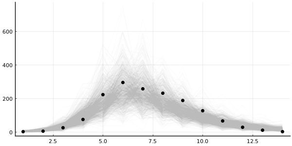
plot_trajectory_quantiles!(plot(legend=false, size=(600, 300)), predictions; data=data)
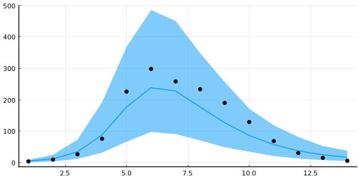
Simulation-based calibration (SBC) Talts et. al. (2018)
- Sample from prior \(\theta_1, \dots, \theta_n \sim p(\theta)\).
- Sample datasets \(\mathcal{D}_i \sim p(\cdot \mid \theta_i)\) for \(i = 1, \dots, n\).
- Obtain (approximate) \(p(\theta \mid \mathcal{D}_i)\) for \(i = 1, \dots, n\).
For large enough (n), the "combination" of the posteriors should recover the prior!
"Combination" here usually means computing some statistic and comparing against what it should be

That's very expensive → in practice we just do this once or twice
# Sample from the conditioned model so we don't get the `in_bed` variables too
using Random # Just making usre the numbers of somewhat interesting
rng = MersenneTwister(43);
test_values = rand(rng, NamedTuple, model_conditioned)
| β | = | 1.2254566808077714 | γ | = | 0.27594266205681933 | ϕ⁻¹ | = | 0.13984179162984164 |
Now we condition on those values and run once to generate data
model_test = model | test_values
Model( args = (:problem_wrapper, :prior) defaults = () context = ConditionContext((β = 1.2254566808077714, γ = 0.27594266205681933, ϕ⁻¹ = 0.13984179162984164), DynamicPPL.DefaultContext()) )
in_best_test = rand(rng, model_test).in_bed;
Next, inference!
model_test_conditioned = model | (in_bed = in_best_test,)
Model( args = (:problem_wrapper, :prior) defaults = () context = ConditionContext((in_bed = [1, 9, 11, 45, 159, 136, 270, 123, 463, 376, 231, 148, 99, 162],), DynamicPPL.DefaultContext()) )
# Let's just do a single chain here.
chain_test = sample(model_test_conditioned, NUTS(0.8), 1000);
┌ Info: Found initial step size └ ϵ = 0.515625 Sampling: 6%|██▌ | ETA: 0:00:03 Sampling: 12%|████▊ | ETA: 0:00:02 Sampling: 19%|███████▋ | ETA: 0:00:02 Sampling: 27%|███████████▏ | ETA: 0:00:01 Sampling: 35%|██████████████▍ | ETA: 0:00:01 Sampling: 43%|█████████████████▊ | ETA: 0:00:01 Sampling: 52%|█████████████████████▎ | ETA: 0:00:01 Sampling: 60%|████████████████████████▌ | ETA: 0:00:01 Sampling: 69%|████████████████████████████▏ | ETA: 0:00:01 Sampling: 77%|███████████████████████████████▊ | ETA: 0:00:00 Sampling: 86%|███████████████████████████████████▏ | ETA: 0:00:00 Sampling: 94%|██████████████████████████████████████▋ | ETA: 0:00:00 Sampling: 100%|█████████████████████████████████████████| Time: 0:00:01
Did we recover the parameters?
ps = []
for sym in [:β, :γ, :ϕ⁻¹]
p = density(chain_test[:, [sym], :])
vline!([test_values[sym]])
push!(ps, p)
end
plot(ps..., layout=(3, 1), size=(600, 400))
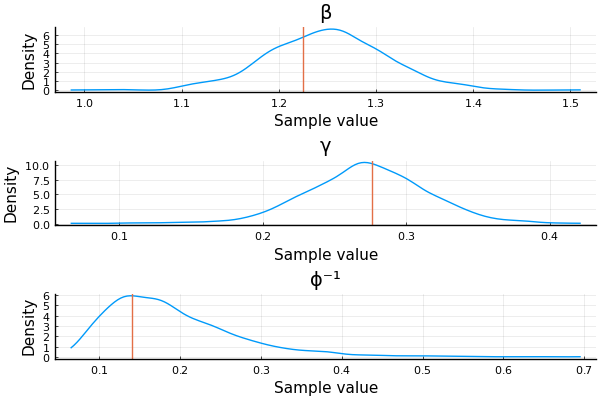
Yay!
Samplers in Turing.jl
- Metropolis-Hastings, emcee, SGLD (AdvancedMH.jl)
- Hamiltonian Monte Carlo, NUTS (AdvancedHMC.jl)
- SMC (AdvancedPS.jl)
- Elliptical Slice Sampling (EllipticalSliceSampling.jl)
- Nested sampling (NestedSamplers.jl)
You can also combine some of these in Turing.jl
using LinearAlgebra: I
@model function linear_regression(X)
num_params = size(X, 1)
β ~ MvNormal(ones(num_params))
σ² ~ InverseGamma(2, 3)
y ~ MvNormal(vec(β' * X), σ² * I)
end
# Generate some dummy data.
X = randn(2, 1_000); lin_reg = linear_regression(X); true_vals = rand(lin_reg)
# Condition.
lin_reg_conditioned = lin_reg | (y = true_vals.y,);
We can then do Gibbs but sampling \(β\) using ESS and \(\sigma^2\) using HMC
chain_ess_hmc = sample(lin_reg_conditioned, Gibbs(ESS(:β), HMC(1e-3, 16, :σ²)), 1_000)
Sampling: 56%|███████████████████████▏ | ETA: 0:00:00 Sampling: 88%|████████████████████████████████████▎ | ETA: 0:00:00 Sampling: 100%|█████████████████████████████████████████| Time: 0:00:00
Chains MCMC chain (1000×4×1 Array{Float64, 3}):
Iterations = 1:1:1000
Number of chains = 1
Samples per chain = 1000
Wall duration = 8.3 seconds
Compute duration = 8.3 seconds
parameters = β[1], β[2], σ²
internals = lp
Summary Statistics
parameters mean std naive_se mcse ess rhat e ⋯
Symbol Float64 Float64 Float64 Float64 Float64 Float64 ⋯
β[1] 1.3997 0.1352 0.0043 0.0119 138.3032 0.9999 ⋯
β[2] 1.9234 0.0840 0.0027 0.0053 365.7435 1.0025 ⋯
σ² 2.9757 0.2581 0.0082 0.0413 26.0232 1.0037 ⋯
1 column omitted
Quantiles
parameters 2.5% 25.0% 50.0% 75.0% 97.5%
Symbol Float64 Float64 Float64 Float64 Float64
β[1] 1.2831 1.3727 1.4103 1.4458 1.5147
β[2] 1.8064 1.8929 1.9277 1.9584 2.0271
σ² 2.6884 2.8621 2.9366 3.0353 3.5830
Could potentially lead to improvements
NOTE: Usually very difficult to choose sampler parameters in this case
Means one can also mix discrete and continuous
@model function mixture(n)
cluster ~ filldist(Categorical([0.25, 0.75]), n)
μ ~ MvNormal([-10.0, 10.0], I)
x ~ arraydist(Normal.(μ[cluster], 1))
end
model_mixture = mixture(10)
fake_values_mixture = rand(model_mixture)
model_mixture_conditioned = model_mixture | (x = fake_values_mixture.x, )
chain_discrete = sample(
model_mixture_conditioned, Gibbs(PG(10, :cluster), HMC(1e-3, 16, :μ)), MCMCThreads(), 1_000, 4
)
Chains MCMC chain (1000×13×4 Array{Float64, 3}):
Iterations = 1:1:1000
Number of chains = 4
Samples per chain = 1000
Wall duration = 24.38 seconds
Compute duration = 96.67 seconds
parameters = cluster[1], cluster[2], cluster[3], cluster[4], cluster[5], cluster[6], cluster[7], cluster[8], cluster[9], cluster[10], μ[1], μ[2]
internals = lp
Summary Statistics
parameters mean std naive_se mcse ess rhat ⋯
Symbol Float64 Float64 Float64 Float64 Float64 Float64 ⋯
cluster[1] 2.0000 0.0000 0.0000 0.0000 NaN NaN ⋯
cluster[2] 1.9972 0.0524 0.0008 0.0023 365.2610 1.0102 ⋯
cluster[3] 1.9955 0.0669 0.0011 0.0032 245.3877 1.0175 ⋯
cluster[4] 1.9963 0.0611 0.0010 0.0038 267.9657 1.0143 ⋯
cluster[5] 1.9900 0.0995 0.0016 0.0081 128.9541 1.0415 ⋯
cluster[6] 1.0035 0.0591 0.0009 0.0025 411.5702 1.0052 ⋯
cluster[7] 1.9995 0.0224 0.0004 0.0005 1602.5641 1.0010 ⋯
cluster[8] 2.0000 0.0000 0.0000 0.0000 NaN NaN ⋯
cluster[9] 1.0020 0.0447 0.0007 0.0020 310.3662 1.0071 ⋯
cluster[10] 2.0000 0.0000 0.0000 0.0000 NaN NaN ⋯
μ[1] -9.9146 1.6154 0.0255 0.2026 8.0601 10.2240 ⋯
μ[2] 9.2060 0.4503 0.0071 0.0563 8.6810 3.2269 ⋯
1 column omitted
Quantiles
parameters 2.5% 25.0% 50.0% 75.0% 97.5%
Symbol Float64 Float64 Float64 Float64 Float64
cluster[1] 2.0000 2.0000 2.0000 2.0000 2.0000
cluster[2] 2.0000 2.0000 2.0000 2.0000 2.0000
cluster[3] 2.0000 2.0000 2.0000 2.0000 2.0000
cluster[4] 2.0000 2.0000 2.0000 2.0000 2.0000
cluster[5] 2.0000 2.0000 2.0000 2.0000 2.0000
cluster[6] 1.0000 1.0000 1.0000 1.0000 1.0000
cluster[7] 2.0000 2.0000 2.0000 2.0000 2.0000
cluster[8] 2.0000 2.0000 2.0000 2.0000 2.0000
cluster[9] 1.0000 1.0000 1.0000 1.0000 1.0000
cluster[10] 2.0000 2.0000 2.0000 2.0000 2.0000
μ[1] -12.7031 -11.0947 -9.8453 -8.2498 -7.8713
μ[2] 8.2978 8.9284 9.1255 9.4435 10.0145
ps = []
for (i, realizations) in enumerate(eachcol(Array(group(chain_discrete, :cluster))))
p = density(realizations, legend=false, ticks=false); vline!(p, [fake_values_mixture.cluster[i]])
push!(ps, p)
end
plot(ps..., layout=(length(ps) ÷ 2, 2), size=(600, 40 * length(ps)))
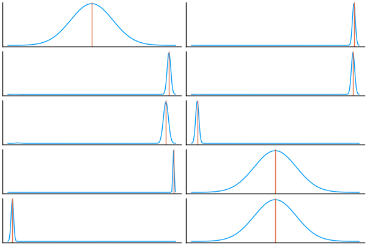
Again, this is difficult to get to work properly on non-trivial examples
But it is possible
Other utilities for Turing.jl
- TuringGLM.jl: GLMs using the formula-syntax from R but using Turing.jl under the hood
- TuringBenchmarking.jl: useful for benchmarking Turing.jl models
- TuringCallbacks.jl: on-the-fly visualizations using
tensorboard

Downsides of using Turing.jl
- Don't do any depedency-extraction of the model ⟹ can't do things like automatic marginalization
- But it's not impossible; just a matter of development effort
- Ongoing work in
TuringLangto make a BUGS compatible model "compiler" / parser (in colab with Andrew Thomas & others)
- NUTS performance is at the mercy of AD in Julia
- You can put anything in your model, but whether you should is a another matter
Benchmarking
using SciMLSensitivity
using BenchmarkTools
using TuringBenchmarking
using ReverseDiff, Zygote
suite = TuringBenchmarking.make_turing_suite(
model_conditioned;
adbackends=[
TuringBenchmarking.ForwardDiffAD{40,true}(),
TuringBenchmarking.ReverseDiffAD{false}(),
TuringBenchmarking.ZygoteAD()
]
);
run(suite)
2-element BenchmarkTools.BenchmarkGroup:
tags: []
"linked" => 4-element BenchmarkTools.BenchmarkGroup:
tags: []
"Turing.Essential.ReverseDiffAD{false}()" => Trial(297.082 μs)
"evaluation" => Trial(19.944 μs)
"Turing.Essential.ForwardDiffAD{40, true}()" => Trial(80.708 μs)
"Turing.Essential.ZygoteAD()" => Trial(1.946 ms)
"not_linked" => 4-element BenchmarkTools.BenchmarkGroup:
tags: []
"Turing.Essential.ReverseDiffAD{false}()" => Trial(330.327 μs)
"evaluation" => Trial(20.059 μs)
"Turing.Essential.ForwardDiffAD{40, true}()" => Trial(106.388 μs)
"Turing.Essential.ZygoteAD()" => Trial(1.979 ms)
More data
Let's add some more timesteps to make it a more interesting
How about 10 000?
# NOTE: We now use 10 000 days instead of just 14.
model_fake = epidemic_model(SIRProblem(N; tspan=(0, 10_000)), prior_improved);
From this we'll generate some fake data
res = rand(model_fake)
model_fake_conditioned = model_fake | (in_bed = res.in_bed,);
model_fake_conditioned().infected
10000-element Vector{Float64}:
1.4369941836867377
2.062149815380856
2.953526281346307
4.218476534116679
6.00145162011078
8.490477877792374
11.917961035994772
16.549064801183786
22.640501639309385
30.36915621347341
39.69892294580726
50.24419902431151
61.16829584837033
⋮
-6.281020696212076e-16
-5.86734257778478e-16
-5.453495650866249e-16
-5.039479915456302e-16
-4.625295371555028e-16
-4.210942019162155e-16
-3.796419858278231e-16
-3.3817288889028905e-16
-2.966869111036133e-16
-2.5518405246778666e-16
-2.1366431298283668e-16
-1.7212769264875416e-16
And run some benchmarks!
suite = TuringBenchmarking.make_turing_suite(
model_fake_conditioned;
adbackends=[
TuringBenchmarking.ForwardDiffAD{40,true}(),
TuringBenchmarking.ReverseDiffAD{false}(),
TuringBenchmarking.ZygoteAD()
]
);
run(suite)
2-element BenchmarkTools.BenchmarkGroup:
tags: []
"linked" => 4-element BenchmarkTools.BenchmarkGroup:
tags: []
"Turing.Essential.ReverseDiffAD{false}()" => Trial(32.643 ms)
"evaluation" => Trial(1.685 ms)
"Turing.Essential.ForwardDiffAD{40, true}()" => Trial(3.485 ms)
"Turing.Essential.ZygoteAD()" => Trial(24.304 ms)
"not_linked" => 4-element BenchmarkTools.BenchmarkGroup:
tags: []
"Turing.Essential.ReverseDiffAD{false}()" => Trial(32.364 ms)
"evaluation" => Trial(1.668 ms)
"Turing.Essential.ForwardDiffAD{40, true}()" => Trial(3.079 ms)
"Turing.Essential.ZygoteAD()" => Trial(23.626 ms)
Julia: The Good, the Bad, and the Ugly
An honest take from a little 27-year old Norwegian boy
The Good
- Speed
- Composability (thank you multiple dispatch)
- No need to tie yourself to an underlying computational framework
- Interactive
- Transparency
- Very easy to call into other languages
Speed
I think you got this already…
Composability
We've seen some of that
Defining infected(problem_wrapper, u) allowed us to abstract away how to extract the compartment of interest
Transparency
For starters, almost all the code you'll end up using is pure Julia
Hence, you can always look at the code
You can find the implementation by using @which
# Without arguments
@which sum
Base
# With arguments
@which sum([1.0])
sum(a::AbstractArray; dims, kw...) in Base at reducedim.jl:994
And yeah, you can even look into the macros
@macroexpand @model f() = x ~ Normal()
quote
function f(__model__::DynamicPPL.Model, __varinfo__::DynamicPPL.AbstractVarInfo, __context__::AbstractPPL.AbstractContext; )
#= In[105]:1 =#
begin
var"##dist#1325" = Normal()
var"##vn#1322" = (DynamicPPL.resolve_varnames)((AbstractPPL.VarName){:x}(), var"##dist#1325")
var"##isassumption#1323" = begin
if (DynamicPPL.contextual_isassumption)(__context__, var"##vn#1322")
if !((DynamicPPL.inargnames)(var"##vn#1322", __model__)) || (DynamicPPL.inmissings)(var"##vn#1322", __model__)
true
else
x === missing
end
else
false
end
end
begin
#= /home/tor/.julia/packages/DynamicPPL/WBmMU/src/compiler.jl:539 =#
var"##retval#1327" = if var"##isassumption#1323"
begin
(var"##value#1326", __varinfo__) = (DynamicPPL.tilde_assume!!)(__context__, (DynamicPPL.unwrap_right_vn)((DynamicPPL.check_tilde_rhs)(var"##dist#1325"), var"##vn#1322")..., __varinfo__)
x = var"##value#1326"
var"##value#1326"
end
else
if !((DynamicPPL.inargnames)(var"##vn#1322", __model__))
x = (DynamicPPL.getvalue_nested)(__context__, var"##vn#1322")
end
(var"##value#1324", __varinfo__) = (DynamicPPL.tilde_observe!!)(__context__, (DynamicPPL.check_tilde_rhs)(var"##dist#1325"), x, var"##vn#1322", __varinfo__)
var"##value#1324"
end
#= /home/tor/.julia/packages/DynamicPPL/WBmMU/src/compiler.jl:540 =#
return (var"##retval#1327", __varinfo__)
end
end
end
begin
$(Expr(:meta, :doc))
function f(; )
#= In[105]:1 =#
return (DynamicPPL.Model)(f, NamedTuple(), NamedTuple())
end
end
end
I told you didn't want to see that.
Can make it a bit cleaner by removing linenums:
@macroexpand(@model f() = x ~ Normal()) |> Base.remove_linenums!
quote
function f(__model__::DynamicPPL.Model, __varinfo__::DynamicPPL.AbstractVarInfo, __context__::AbstractPPL.AbstractContext; )
begin
var"##dist#1331" = Normal()
var"##vn#1328" = (DynamicPPL.resolve_varnames)((AbstractPPL.VarName){:x}(), var"##dist#1331")
var"##isassumption#1329" = begin
if (DynamicPPL.contextual_isassumption)(__context__, var"##vn#1328")
if !((DynamicPPL.inargnames)(var"##vn#1328", __model__)) || (DynamicPPL.inmissings)(var"##vn#1328", __model__)
true
else
x === missing
end
else
false
end
end
begin
var"##retval#1333" = if var"##isassumption#1329"
begin
(var"##value#1332", __varinfo__) = (DynamicPPL.tilde_assume!!)(__context__, (DynamicPPL.unwrap_right_vn)((DynamicPPL.check_tilde_rhs)(var"##dist#1331"), var"##vn#1328")..., __varinfo__)
x = var"##value#1332"
var"##value#1332"
end
else
if !((DynamicPPL.inargnames)(var"##vn#1328", __model__))
x = (DynamicPPL.getvalue_nested)(__context__, var"##vn#1328")
end
(var"##value#1330", __varinfo__) = (DynamicPPL.tilde_observe!!)(__context__, (DynamicPPL.check_tilde_rhs)(var"##dist#1331"), x, var"##vn#1328", __varinfo__)
var"##value#1330"
end
return (var"##retval#1333", __varinfo__)
end
end
end
begin
$(Expr(:meta, :doc))
function f(; )
return (DynamicPPL.Model)(f, NamedTuple(), NamedTuple())
end
end
end
f(x) = 2x
f (generic function with 1 method)
You can inspect the type-inferred and lowered code
@code_typed f(1)
CodeInfo( 1 ─ %1 = Base.mul_int(2, x)::Int64 └── return %1 ) => Int64
You can inspect the LLVM code
@code_llvm f(1)
; @ In[107]:1 within `f`
define i64 @julia_f_49347(i64 signext %0) #0 {
top:
; ┌ @ int.jl:88 within `*`
%1 = shl i64 %0, 1
; └
ret i64 %1
}
And even the resulting machine code
@code_native f(1)
.text
.file "f"
.globl julia_f_49384 # -- Begin function julia_f_49384
.p2align 4, 0x90
.type julia_f_49384,@function
julia_f_49384: # @julia_f_49384
; ┌ @ In[107]:1 within `f`
.cfi_startproc
# %bb.0: # %top
; │┌ @ int.jl:88 within `*`
leaq (%rdi,%rdi), %rax
; │└
retq
.Lfunc_end0:
.size julia_f_49384, .Lfunc_end0-julia_f_49384
.cfi_endproc
; └
# -- End function
.section ".note.GNU-stack","",@progbits
It really just depends on which level of "I hate my life" you're currently at
Calling into other languages
- C and Fortran comes built-in stdlib
- RCall.jl: call into
R - PyCall.jl: call into
python - Etc.
When working with Array, etc. memory is usually shared ⟹ fairly low overhead
C and Fortran
# Define the Julia function
function mycompare(a, b)::Cint
println("mycompare($a, $b)") # NOTE: Let's look at the comparisons made.
return (a < b) ? -1 : ((a > b) ? +1 : 0)
end
# Get the corresponding C function pointer.
mycompare_c = @cfunction(mycompare, Cint, (Ref{Cdouble}, Ref{Cdouble}))
# Array to sort.
A = [1.3, -2.7, 4.4, 3.1];
# Call in-place quicksort.
ccall(:qsort, Cvoid, (Ptr{Cdouble}, Csize_t, Csize_t, Ptr{Cvoid}),
A, length(A), sizeof(eltype(A)), mycompare_c)
invalid redefinition of constant A Stacktrace: [1] top-level scope @ In[111]:11
# All sorted!
A
A (generic function with 2 methods)
The Bad
Sometimes
- your code might just slow down without a seemingly good reason,
- someone did bad, and Julia can't tell which method to call, or
- someone forces the Julia compiler to compile insane amounts of code
"Why is my code suddenly slow?"
One word: type-instability
Sometimes the Julia compiler can't quite infer what types fully
Result: python-like performance (for those particular function calls)
# NOTE: this is NOT `const`, and so it could become some other type
# at any given point without `my_func` knowing about it!
global_variable = 1
my_func_unstable(x) = global_variable * x
my_func_unstable (generic function with 1 method)
@btime my_func_unstable(2.0);
26.529 ns (2 allocations: 32 bytes)
Luckily there are tools for inspecting this
@code_warntype my_func_unstable(2.0)
MethodInstance for my_func_unstable(::Float64) from my_func_unstable(x) in Main at In[113]:4 Arguments #self#::Core.Const(my_func_unstable) x::Float64 Body::Any 1 ─ %1 = (Main.global_variable * x)::Any └── return %1
See that Any there? 'tis a big no-no!
Once discovered, it can be fixed
const constant_global_variable = 1
my_func_fixed(x) = constant_global_variable * x
@code_warntype my_func_fixed(2.0)
MethodInstance for my_func_fixed(::Float64) from my_func_fixed(x) in Main at In[116]:2 Arguments #self#::Core.Const(my_func_fixed) x::Float64 Body::Float64 1 ─ %1 = (Main.constant_global_variable * x)::Float64 └── return %1
So long Python performance!
@btime my_func_fixed(2.0);
1.496 ns (0 allocations: 0 bytes)
But this is not always so easy to discover (though this is generally rare)
# HACK: Here we explicitly tell Julia what type `my_func_unstable`
# returns. This is _very_ rarely a good idea because it just hides
# the underlying problem from `@code_warntype`!
my_func_forced(x) = my_func_unstable(x)::typeof(x)
@code_warntype my_func_forced(2.0)
MethodInstance for my_func_forced(::Float64) from my_func_forced(x) in Main at In[118]:4 Arguments #self#::Core.Const(my_func_forced) x::Float64 Body::Float64 1 ─ %1 = Main.my_func_unstable(x)::Any │ %2 = Main.typeof(x)::Core.Const(Float64) │ %3 = Core.typeassert(%1, %2)::Float64 └── return %3
We can still see the Any in there, but on a first glance it looks like my_func_forced is type-stable
There are more natural cases where this might occur, e.g. unfortunate closures deep in your callstack
To discovery these there are a couple of more advanced tools:
- Cthulhu.jl: Allows you to step through your code like a debugger and perform
@code_warntype - JET.jl: Experimental package which attempts to automate the process
And even simpler: profile using ProfileView.jl and look for code-paths that should be fast but take up a lot of the runtime
using ProfileView
@profview foreach(_ -> my_func_unstable(2.0), 1_000_000)

Note that there's no sign of multiplication here
But most of the runtime is the ./reflection.jl at the top there
That's Julia looking up the type at runtime
Method ambiguity
ambiguous_function(x, y::Int) = y
ambiguous_function(x::Int, y) = x
# NOTE: Here we have `ambiguous_function(x::Int, y::Int)`
# Which one should we hit?!
ambiguous_function(1, 2)
MethodError: ambiguous_function(::Int64, ::Int64) is ambiguous. Candidates: ambiguous_function(x, y::Int64) in Main at In[120]:1 ambiguous_function(x::Int64, y) in Main at In[120]:2 Possible fix, define ambiguous_function(::Int64, ::Int64) Stacktrace: [1] top-level scope @ In[120]:6
But here Julia warns us, and so we can fix this by just doing as it says: define ambiguous_function(::Int64, ::Int64)
ambiguous_function(::Int64, ::Int64) = "neato"
ambiguous_function(1, 2)
"neato"
Long compilation times
In Julia, for better or worse, we can generate code
Problem: it can be lots of code of we really want to
Result: first execution can be slow
Time to first plot (TTFP) is Julia's worst enemy
But things are always improving
Another example: mis-use of @generated
# NOTE: `@generated` only has access to static information, e.g. types of arguments.
# Here I'm using the special type `Val` to make a number `N` static.
@generated function unrolled_addition(::Val{N}) where {N}
expr = Expr(:block)
push!(expr.args, :(x = 0))
for i = 1:N
push!(expr.args, :(x += $(3.14 * i)))
end
return expr
end
unrolled_addition (generic function with 1 method)
When I call this with some Val(N), Julia will execute this at compile-time!
# NOTE: At runtime, it then just returns the result immediately
@code_typed unrolled_addition(Val(10))
CodeInfo( 1 ─ return 172.70000000000002 ) => Float64
But if I just change the value 10 to 11, it's a completely different type!
So Julia has to compile unrolled_addition from scratch
@time @eval unrolled_addition(Val(11));
0.006641 seconds (11.61 k allocations: 654.885 KiB, 9.82% compilation time)
Or a bit crazier
@time @eval unrolled_addition(Val(10_001));
0.274227 seconds (1.19 M allocations: 48.946 MiB, 99.91% compilation time)
Here it took ~0.4s, of which 99.95% was compilation time
I think you get the idea
But boy is it fast to run!
@btime unrolled_addition(Val(10_001));
1.538 ns (0 allocations: 0 bytes)
function not_unrolled_addition(N)
x = 0
for i = 1:N
x += 3.14 * i
end
return x
end
not_unrolled_addition (generic function with 1 method)
@btime not_unrolled_addition(10_001);
10.280 μs (0 allocations: 0 bytes)
Funny side-note: at first I did the following
@generated function unrolled_addition_old(::Val{N}) where {N}
expr = Expr(:block)
push!(expr.args, :(x = 0))
for i = 1:N
push!(expr.args, :(x += $i)) # NOTE: No 3.14!
end
return expr
end
function not_unrolled_addition_old(N)
x = 0
for i = 1:N
x += i # NOTE: No 3.14!
end
return x
end
not_unrolled_addition_old (generic function with 1 method)
@btime unrolled_addition_old(Val(10_001));
@btime not_unrolled_addition_old(10_001);
1.538 ns (0 allocations: 0 bytes) 2.678 ns (0 allocations: 0 bytes)
LLVM probably recognized the pattern of not_unrolled_addition_old and unrolls it for us
Let's check!
# NOTE: The one LLVM failed to unroll
@code_llvm not_unrolled_addition(10_001)
; @ In[127]:1 within `not_unrolled_addition`
define { {}*, i8 } @julia_not_unrolled_addition_50490([8 x i8]* noalias nocapture align 8 dereferenceable(8) %0, i64 signext %1) #0 {
top:
; @ In[127]:3 within `not_unrolled_addition`
; ┌ @ range.jl:5 within `Colon`
; │┌ @ range.jl:393 within `UnitRange`
; ││┌ @ range.jl:400 within `unitrange_last`
%.inv = icmp sgt i64 %1, 0
%. = select i1 %.inv, i64 %1, i64 0
; └└└
br i1 %.inv, label %L18.preheader, label %union_move16
L18.preheader: ; preds = %top
; @ In[127]:5 within `not_unrolled_addition`
; ┌ @ range.jl:883 within `iterate`
; │┌ @ promotion.jl:477 within `==`
%.not30 = icmp eq i64 %., 1
; └└
br i1 %.not30, label %union_move, label %L51
L51: ; preds = %L51, %L18.preheader
%value_phi1032 = phi double [ %value_phi10, %L51 ], [ 3.140000e+00, %L18.preheader ]
%value_phi431 = phi i64 [ %2, %L51 ], [ 1, %L18.preheader ]
; ┌ @ range.jl:883 within `iterate`
%2 = add i64 %value_phi431, 1
; └
; @ In[127]:4 within `not_unrolled_addition`
; ┌ @ promotion.jl:389 within `*`
; │┌ @ promotion.jl:359 within `promote`
; ││┌ @ promotion.jl:336 within `_promote`
; │││┌ @ number.jl:7 within `convert`
; ││││┌ @ float.jl:146 within `Float64`
%3 = sitofp i64 %2 to double
; │└└└└
; │ @ promotion.jl:389 within `*` @ float.jl:385
%4 = fmul double %3, 3.140000e+00
; └
; @ In[127] within `not_unrolled_addition`
%value_phi10 = fadd double %value_phi1032, %4
; @ In[127]:5 within `not_unrolled_addition`
; ┌ @ range.jl:883 within `iterate`
; │┌ @ promotion.jl:477 within `==`
%.not = icmp eq i64 %2, %.
; └└
br i1 %.not, label %L18.union_move_crit_edge, label %L51
post_union_move: ; preds = %union_move16, %union_move
%tindex_phi1429 = phi i8 [ 2, %union_move16 ], [ 1, %union_move ]
; @ In[127]:7 within `not_unrolled_addition`
%5 = insertvalue { {}*, i8 } { {}* null, i8 undef }, i8 %tindex_phi1429, 1
ret { {}*, i8 } %5
L18.union_move_crit_edge: ; preds = %L51
; @ In[127]:5 within `not_unrolled_addition`
%phi.cast = bitcast double %value_phi10 to i64
br label %union_move
union_move: ; preds = %L18.union_move_crit_edge, %L18.preheader
%value_phi10.lcssa = phi i64 [ %phi.cast, %L18.union_move_crit_edge ], [ 4614253070214989087, %L18.preheader ]
; @ In[127]:7 within `not_unrolled_addition`
%6 = bitcast [8 x i8]* %0 to i64*
store i64 %value_phi10.lcssa, i64* %6, align 8
br label %post_union_move
union_move16: ; preds = %top
%7 = bitcast [8 x i8]* %0 to i64*
store i64 0, i64* %7, align 8
br label %post_union_move
}
# NOTE: The one LLVM seems to have unrolled.
@code_llvm not_unrolled_addition_old(10_001)
; @ In[129]:9 within `not_unrolled_addition_old`
define i64 @julia_not_unrolled_addition_old_50492(i64 signext %0) #0 {
top:
; @ In[129]:11 within `not_unrolled_addition_old`
; ┌ @ range.jl:5 within `Colon`
; │┌ @ range.jl:393 within `UnitRange`
; ││┌ @ range.jl:400 within `unitrange_last`
%.inv = icmp sgt i64 %0, 0
%. = select i1 %.inv, i64 %0, i64 0
; └└└
br i1 %.inv, label %L18.preheader, label %L35
L18.preheader: ; preds = %top
; @ In[129]:13 within `not_unrolled_addition_old`
%1 = shl nuw i64 %., 1
%2 = add nsw i64 %., -1
%3 = zext i64 %2 to i65
%4 = add nsw i64 %., -2
%5 = zext i64 %4 to i65
%6 = mul i65 %3, %5
%7 = lshr i65 %6, 1
%8 = trunc i65 %7 to i64
%9 = add i64 %1, %8
%10 = add i64 %9, -1
; @ In[129]:14 within `not_unrolled_addition_old`
br label %L35
L35: ; preds = %L18.preheader, %top
%value_phi10 = phi i64 [ 0, %top ], [ %10, %L18.preheader ]
ret i64 %value_phi10
}
The Ugly
Reverse-mode automatic differentiation
ForwardDiff.jl is a pure joy, but slows down as dimensionality grows
Then one should reach for ReverseDiff.jl or Zygote.jl
Most of the time it works really well, but sometimes you hit a real sharp edge
And sharp edges cut; they cut deep
Like "16X slower when the function is implemented more efficiently"-deep
If you want to see a man in pain, you can find the full issue here
On the flip-side, once addressed (a type-instability), it's 3X faster than before
Overall
Julia is pretty darn awesome
Easy to get going, and you can always make it faster by just optimizing your Julia code
No need to drop down to C++
Buuuut it can't beat Python at deep learning
Otherwise, it's worth a try
Godspeed to you
Fin.